Overview
This website was assigned to first year BSc.Computing students by the University of Northampton.
The assignment was to build a website using HTML and CSS which also had to responsive.
Objectives:
- To develop a website using html and css.
- To learn how github and github repositories work.
- To have a good understanding of the subject
Journal
- Assigned date:May 11, 2021
- May 12, 2021 : Project started and first commit of the project
- May 14, 2021 : Worked on home page and navigation menus
- May 16, 2021 : Worked on CV page while improving navigation bars and other aspects of the website
- May 17, 2021 : Changed background color and added comments
- May 18, 2021 : Animation used for nav bar and Updated CV
- May 22, 2021 : Debugging and worked on responsive
- May 23, 2021 : Made CV page responsive
- May 25, 2021 : Created new branch for Site report and started to work on report page
Report
Being a computer enthusiast, I always dreamed of being able to create a program or website of my own.
By enrolling in BSc. Computing program I was able to learn the basics of HTML and CSS and was able to build a responsive website.
I had all the basic information and syntaxes of various features that help us successfully build a responsive website.
I would like to thank my tutor, Mr. Ankit Thapa, for providing me proper guidance and his unique teaching style helped me build this project with minimum errors.
This project was made possible due to the knowledge I gained during the course.
My experience working on this project has been adventurous. The highs and lows made it more interesting.
Despite the fact that it was difficult to identify the errors, I had a great time fabricating this website.
Encountering errors now and then undoubtedly was punishing but it surely made me more conscious about the way of writing not only correct but also well-styled code.
Over the course of developing this website, I learned how to approach different problems/errors and solve them.
Although, this was after a lot of trials and errors which helped me recognize the faults that my initial process contained.
This was along with me picking up how to make my website responsive, despite the struggle it took to keep the site stable as it was very difficult to get a grasp of at first.
Resulting in development of my own abilities as a developer.
Module experience
I have been interested in web development from a very young age. Curiosity got me thinking about how websites work. I was always interested in making my own website.
WEB I was the most interesting module in Term I. I enjoyed this module because there were enough practical exercises that made learning fun. Learning any subject practically is more enjoyable and effective than studying it on paper.
WEB I was just the subject to answer a lot of my questions.
Initially, I was not able to comprehend the subject contents but gradually I got my feet wet in the world of web development.
Seeing the code for the first time was scary but also amazing at the same time, i was so excited to learn it and build my own website.
As a module teacher, Mr. Ankit Thapa, has been a great mentor. He helped me get over various hurdles in learning HTML and CSS.
He recommended various study materials, websites and books which would help us improve our skill on developing a simple yet eye catching website.
Due to his proper guidance I was able to understand this module and am capable of building a simple website.
The first phase of coding was both terrifying and exciting; I was eager to learn so that I could finally design a basic website of my own.
The following pictures show the improvements of the website over time
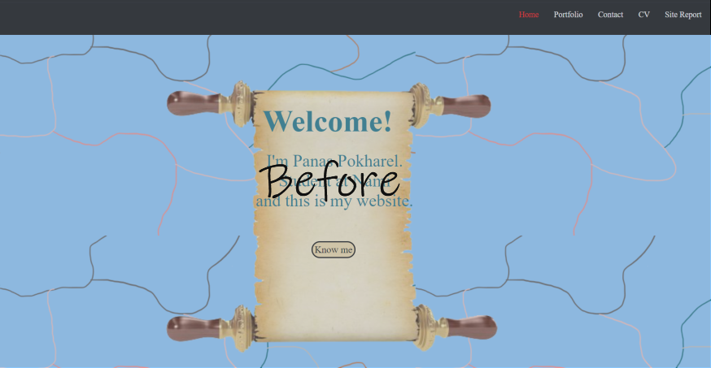
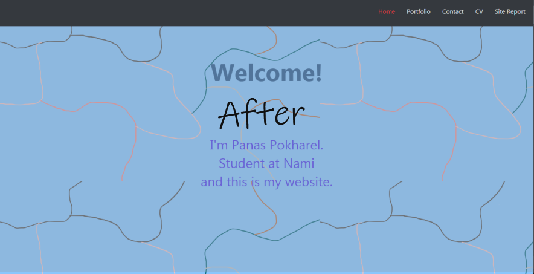
Home page:
My initial home page had an old scroll bar with lied under my introduction, this paticular design
wasn't as good as i expected it to be so later i decided to change and keep it as simple as possible.
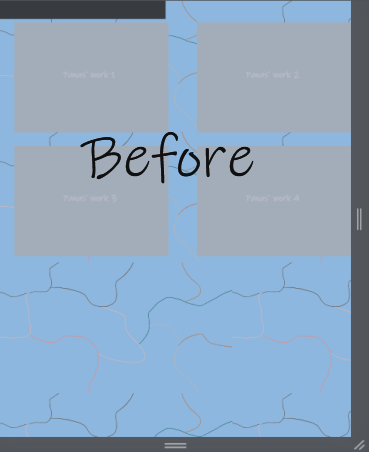
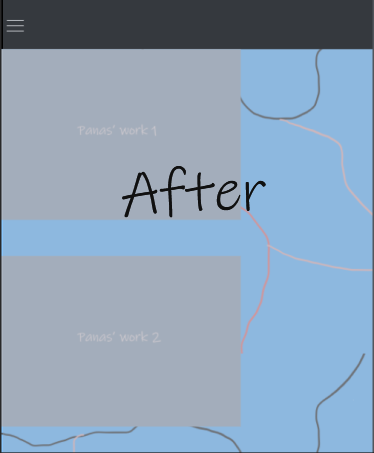
Portfolio page:
The portfolio page was made using girid type display with two columns. The layout wasn't responsive
so to make it responsive I changed the display type grid from two columns to only one column.
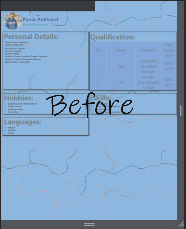
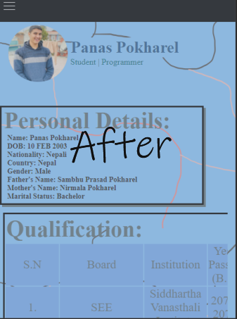
CV page:
The cv page for responsive page wasn't aligned properly due to 2 grid coulmn. Even after using only one column the tabe was
too big for the screen. I decided to use x-overflow so the table can fit inside screen and can be slided on either direction
to view the data.
Validation gallery
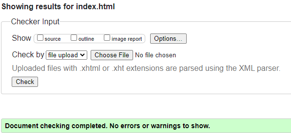
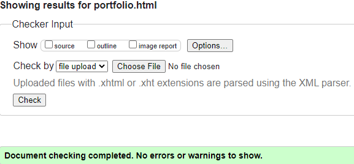
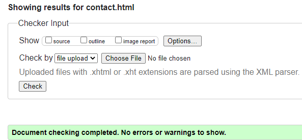
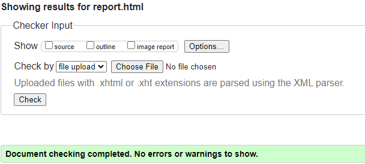
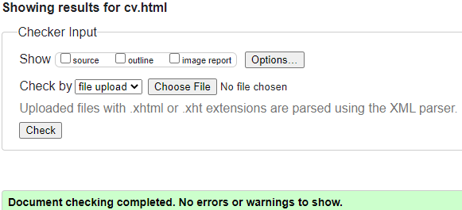
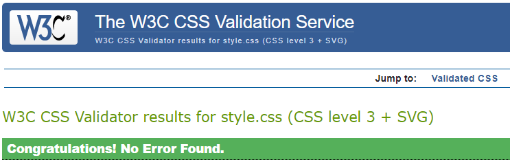
Refrence(s):
Picture used in Contact page
- Article title: An Anthology of Poems: Illustration art, Drawings, Art
- URL HERE
- Date accessesd: May 24, 2021
- Publisher: Odyssey